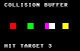

Collision detection
lynx-coll.cfg plus gfx_setcollisiondetection),
and walks through the collision.c
example.1. The collision buffer
The Lynx draws nothing to the screen a pixel at a time; every visible thing is a
sprite painted by Suzy's blitter into a video buffer (see Graphics,
and Sprites for the SCB itself).
Alongside that video buffer Suzy can keep a second bitmap of exactly the same
geometry — 160 × 102 cells — called the collision
buffer. It never reaches the display. Where the video buffer holds a
colour for each pixel, the collision buffer holds a 4-bit
collision number: the tag of the last collideable sprite painted
into that cell, or 0 if nothing collideable is there.
As Suzy paints a collideable sprite it does two things to each cell it touches: it reads the number already in the collision buffer (that is how a collision is noticed), then it writes this sprite's own number in its place. So the buffer is a running record of “what collideable thing is here now,” and a freshly painted sprite discovers everything collideable that was drawn before it in the same frame.
2. Collision numbers and the depository
Every sprite carries a 4-bit collision number in the low nibble
of the third SCB byte, SPRCOLL (the sprcoll field of the
SCB_* structs in <lynx/_suzy.h>). Values run
0–15; the software assigns them and their meaning is entirely up
to the game. Bit 5 of the same byte is the per-sprite don't-collide
flag (the NO_COLLIDE constant, $20), covered in
section 3.
When a collideable sprite finishes painting, Suzy writes one byte — the
collision depository — recording the highest collision number
it ran into. A depository of 0 means this sprite overlapped nothing
collideable that was already in the buffer; any other value is the collision number
of something it hit. The hardware writes the depository on every collideable
paint, so you never have to clear it yourself; you read it back with the CPU after
the sprite is drawn.
2.1. Highest number wins
The rule is deliberately simple. At the start of painting a sprite an internal register (Suzy's designers called it fred) is cleared to 0. As each cell is painted, the number read from the collision buffer is compared with fred; if it is larger, it replaces it. When the sprite is done, fred is the depository value. So if a sprite overlaps several collideable objects at once, the depository reports only the highest of their collision numbers — not a list, not a count, not the first. A common convention is therefore to assign collision numbers in visual-depth or priority order, so the one number you get back is the one that matters most.
2.2. Where the depository byte lives
The depository is not a fixed hardware register; it is a byte in your SCB's RAM,
and you tell Suzy where by loading the COLLOFF register with the signed
offset from the start of the SCB to the depository byte. lynxcc's
gfx_init sets
COLLOFF = $FFFF (that is, −1), so Suzy writes the
depository to the byte immediately before the SCB. To read a sprite's
collision result you therefore place one byte in front of its SCB and read that byte
back after the paint. In C the neat way is a wrapper struct whose first member is the
depository byte:
static struct {
unsigned char coll; /* Suzy writes the depository here (SCB - 1) */
SCB_REHV_PAL scb;
} player;
gfx_sprite (&player.scb); /* synchronous: paints, then writes coll */
hit = player.coll; /* 0 = nothing hit, else the number struck */
cc65 lays struct members out with no padding, so &player.scb − 1
is exactly &player.coll and the two line up. Note that every
collideable sprite gets a depository written −1 byte in front of it, so it is
good practice to give collideable SCBs that leading byte even when you do not read it,
lest Suzy scribble on whatever happens to precede the struct in memory.
COLLOFF = −1 the depository is the byte just before
the SCB. The collision number the sprite carries is a different field,
sprcoll, inside the SCB.3. Sprite types: opting in and out
Whether a sprite takes part in collision at all is governed by its
type (the low three bits of SPRCTL0, the
TYPE_* constants in <lynx/_suzy.h>) and by a couple of
override bits. The full sprite-type table, with the pen semantics of every type, is
on the Sprites page. Not every sprite should collide — a scoreboard, a cloud or a
cockpit frame is visible but should never register — and skipping collision
also makes a sprite paint faster, because Suzy can drop the read-modify-write of the
collision buffer. The types that matter for collision are:
| Type | Constant | Collision behaviour |
|---|---|---|
| Normal | TYPE_NORMAL | The workhorse. Pen 0 is transparent and non-colliding; pens 1–15 are opaque and collideable. Reads and writes the collision buffer, writes a depository. |
| Boundary | TYPE_BOUNDARY | Like normal, but pen 15 is transparent yet still collideable — an invisible wall a ball can bounce off without visibly penetrating. |
| Non-collideable | TYPE_NONCOLL | Never touches the collision buffer; all collision activity is overridden. Use it for HUD and scenery. Paints faster. |
| Background | TYPE_BACKGROUND | Overwrites both buffers (pens 0 and 15 are no longer transparent) and does no collision detection. Used to initialise a scene — and, with collision on, to wipe the collision buffer (see below). Faster to paint. |
| Shadow / XOR / others | TYPE_SHADOW, TYPE_XOR, … | Specialised variants that keep normal collision activity while changing how pens 14/15 or the video data are treated. Rarely needed for collision logic. |
Three switches can suppress collision regardless of type, each overriding everything below it:
the non-collideable sprite type above;
the don't-collide bit in the sprite's own
SPRCOLLbyte (NO_COLLIDE,$20) — disables collision for that one sprite;the global no-collide bit in Suzy's
SPRSYSregister — disables collision for all sprites at once. This is the bitgfx_setcollisiondetectiontoggles.
4. Turning it on
4.1. Reserving the buffer: lynx-coll.cfg
The collision buffer costs a full screen's worth of RAM — roughly 8 KB
— and the Lynx has only 64 KB, so lynxcc does not spend it
unless you ask. Reserving the space is a link-time decision: build with
lynx-coll.cfg instead of the default lynx.cfg and the linker
carves the collision buffer out below the two screen pages, shrinking the RAM left for
code, data and heap accordingly. The Memory page has the exact
map; the buffer sits at $A058 and the C stack drops from $C037
to $A057 to make room.
cl65 -Ors -C lynx-coll.cfg -o collision.lnx collision.c
A program linked with the default config has no collision buffer; calling
gfx_setcollisiondetection(1) there would point Suzy at RAM that belongs to
your program, so the two must go together.
4.2. gfx_init and gfx_setcollisiondetection
gfx_init() already does the
hardware wiring: it loads COLLBASE with the buffer address
($A058) and COLLOFF with −1, so the depository lands one
byte before each SCB. What it does not do is switch collision on —
detection is off by default, matching the fast path for programs that never use it.
gfx_setcollisiondetection(active)
flips it. Passing a nonzero value clears Suzy's global no-collide bit
and reconfigures the clear sprite that gfx_clear / gfx_clearrows use, so that clearing the
screen also wipes the matching rows of the collision buffer. That second part matters:
without it the collision buffer would accumulate stale numbers frame after frame and
every sprite would “collide” with last frame's ghosts. With detection on,
the normal gfx_clear() at the top of your draw loop resets both buffers
together, and each frame starts clean.
5. Worked example: collision.c
examples/suzy/collision.c puts
the whole mechanism on screen. Four fixed target blocks sit in a row, tagged with
collision numbers 1–4; a white player block sweeps across them (the d-pad
steers it too). Every frame the targets are drawn first — laying their numbers
into the collision buffer — and the player last, so that when the player paints,
Suzy reads the target numbers underneath it. Reading player.coll after the
paint tells the program exactly which target was struck, with no per-pixel testing in
C: the struck target flashes and a HIT TARGET n read-out shows
the depository value.

HIT TARGET 3.The core of it is the draw order and the one-byte read-back:
gfx_setcollisiondetection (1); /* once, after gfx_init() */
/* ... */
gfx_clear (); /* clears screen AND coll buffer */
for (i = 0; i < 4; ++i)
gfx_sprite (&targets[i].scb); /* numbers 1..4 into the buffer */
gfx_sprite (&player.scb); /* reads them back as it paints */
hit = player.coll; /* the highest number it covered */
Because the targets are spaced apart, the player is over at most one at a time and
hit is that target's number; overlap two and you would get the higher of
them, per section 2.1. The example links with
lynx-coll.cfg — the one example in the tree that overrides the link
config — because it needs the buffer that config reserves.
6. Limitations and gotchas
Collision is a painting side effect. It happens only while Suzy paints sprites into the buffer; the CPU writing directly to the video buffer triggers nothing, and a sprite only ever sees things painted before it in the same frame. Draw order is your collision order.
You get one number, not a set. The depository reports the single highest collision number overlapped. If a sprite can straddle several different objects and you need to know about all of them, encode priority into the numbers or partition objects into separately drawn passes.
It is overlap in the collision buffer, not true pixel shape. Collision is per painted, collideable pixel, so it is tighter than a bounding box — but transparent pen 0 (and, on boundary sprites, pen 15) does not stamp the buffer, so shape it with your art and pen choices.
Clear both buffers every frame. With detection on,
gfx_clear()handles this; if you clear with your own background sprite instead, use a background-type sprite so it wipes the collision buffer too, and remember pen 14 (shadow) will not clear its cell.Give every collideable SCB a leading byte. Suzy writes a depository one byte before each collideable sprite, read back or not; without a byte reserved there it will corrupt whatever precedes the SCB in memory.
7. License
The Lynx runtime, like the rest of the package, is distributed under the cc65 zlib-style license. The full text, together with every other copyright notice in the distribution, is reproduced verbatim on the consolidated Licenses and copyright notices page.